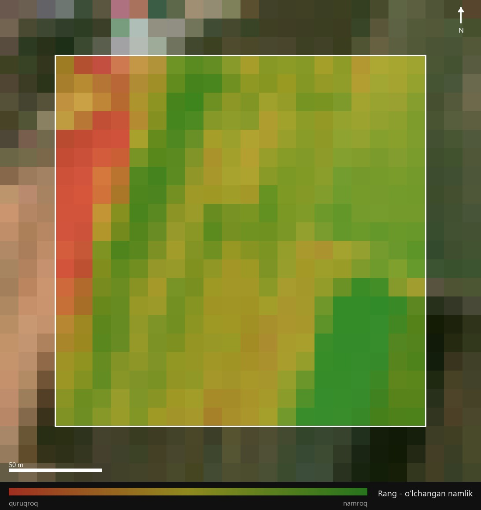
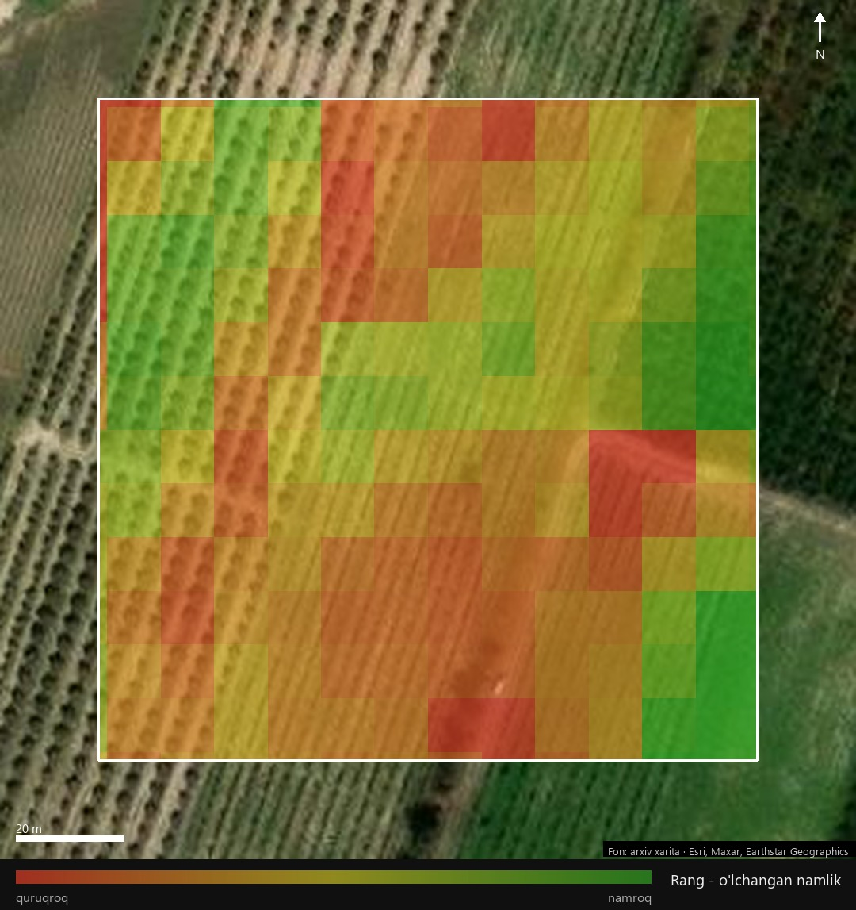
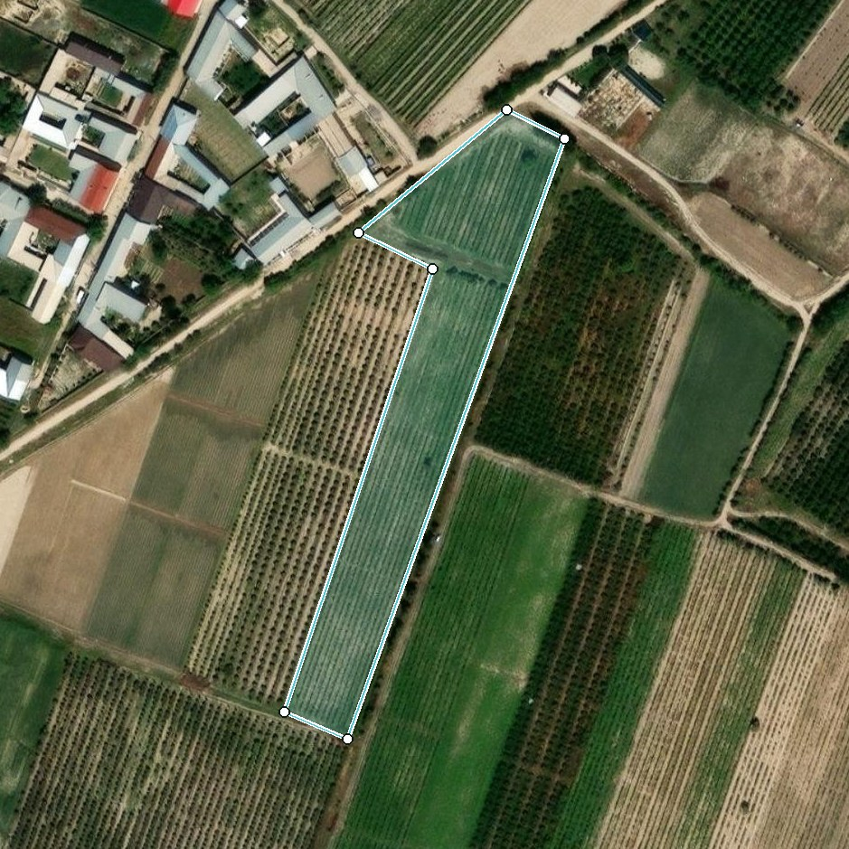
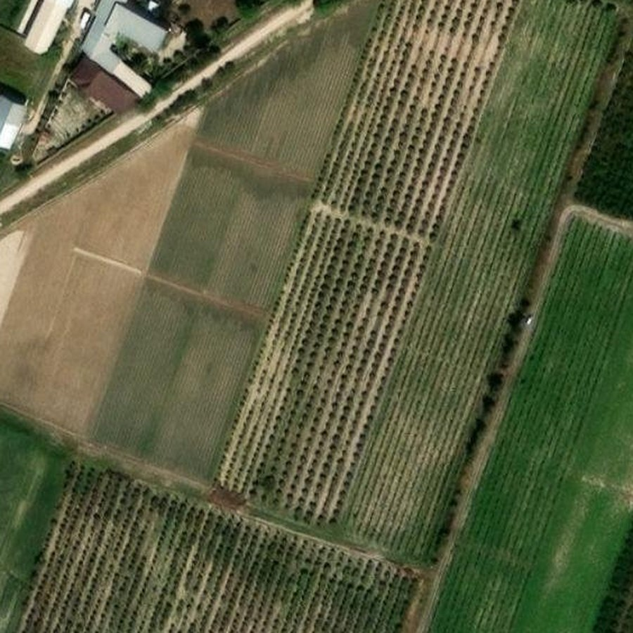
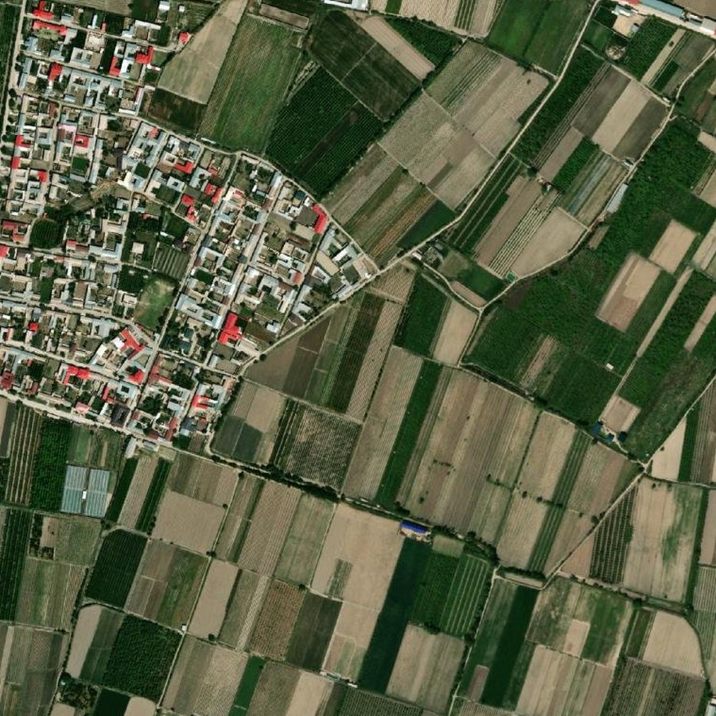
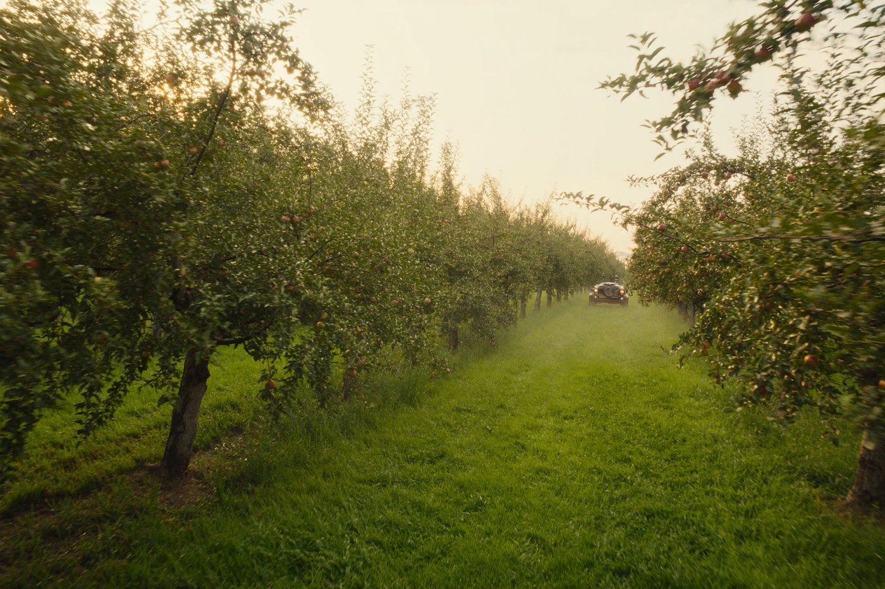
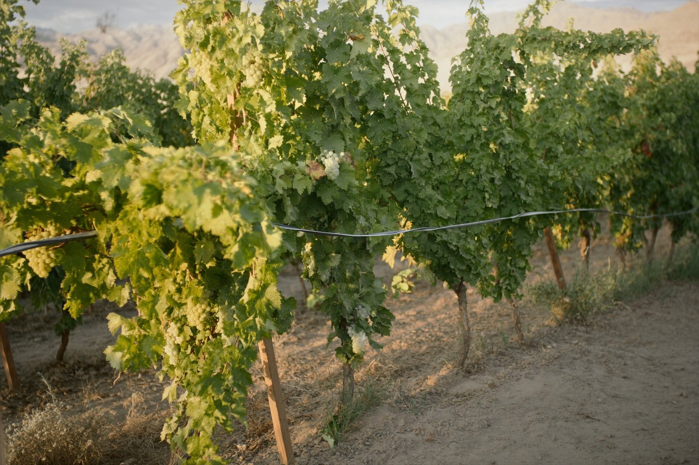
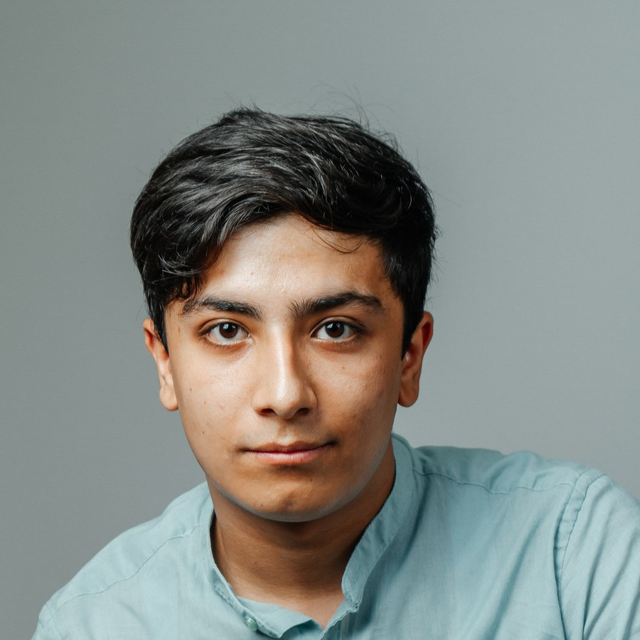
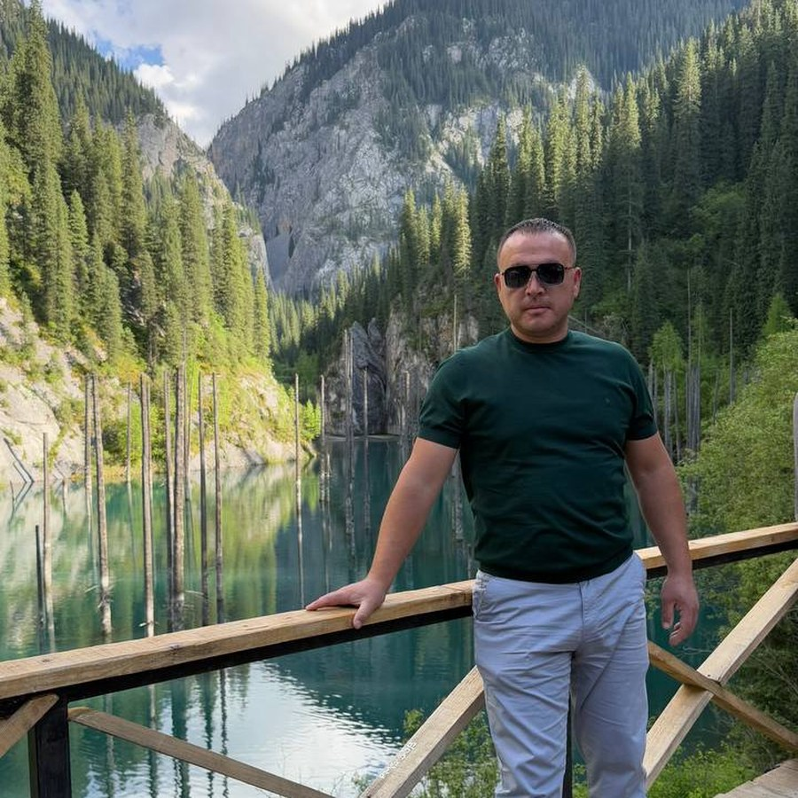

§1Карта — только по замеру
Пока нет ни наблюдения фермера, ни спутникового замера — карта не рисуется вообще. Догадка не показывается как факт.
Telegram-бот считает водный баланс FAO-56, смотрит на поле из космоса и говорит фермеру одну фразу: когда включить насос и на сколько часов. Теперь — с картой влажности каждого гектара.
Индекс влажности NDMI по каждой клетке 20×20 метров — измеренный спутником, не нарисованный моделью. Наведите на клетку. Потом откройте воду.
Так выглядит день 6 продукта: фермер открыл канал — спутник через несколько дней покажет, докуда добежала вода и где остались сухие языки.
Кликайте по углам участка. Площадь считается на лету — как в настоящем Mini App бота, где фермер обводит поле на спутниковой карте.
После обводки бот переспрашивает площадь — и честно называет расхождение с анкетой больше 10 %. Замер идёт ровно по вашей меже, а не по квадрату.
Слева — как выглядит бесплатный спутник (10 м на пиксель). Справа — то, что получает фермер: архивная карта высокого разрешения, а поверх — измеренная влажность сегодняшнего снимка. Потяните ползунок.


Это не рендер — реальный кадр из бота: виноградник пилота, замер влажности от 16 августа 2026.
Полив, равномерность, погода и расходы собираются в одну карточку. Секции — реестр: заморозки и засоление встанут туда без переделки экрана. Навигация правит одно сообщение — чат не превращается в простыню.
Статус — всегда словом, не только цветом: часть фермеров не различает красный и зелёный.
Красивая картинка убедительнее данных под ней — поэтому у бота есть правила, которые запрещают ему приукрашивать. Каждое закреплено автотестом.
Пока нет ни наблюдения фермера, ни спутникового замера — карта не рисуется вообще. Догадка не показывается как факт.
«Замер влажности: 16.08» относится ровно к тем клеткам, что нарисованы. Архивный фон подписан как архивный.
Если разброс влажности меньше порога прибора, поле не раскрашивается: растянутая шкала нарисовала бы узор, которого нет.
Шкала строится по устойчивым границам: случайная мокрая колея не превращает всё поле в «красное».
Журнал хранит три факта: что сказали, что сделал фермер, что показал счётчик. Экономия выводится при чтении — и оспаривается.
Облака над полем, старый снимок, поле меньше клетки замера — бот называет причину, а не показывает старое как свежее.
Это не стоковые фотографии — это настоящие поля пилота на тех же спутниковых картах, по которым фермер обводит контур, а бот строит замер.



Видео — анимированная презентация SUV AI; спутниковые карты — Esri, Maxar, Earthstar Geographics.
KPI продукта устроен как его журнал: каждую цифру можно пересчитать и оспорить. Вот к чему мы идём — и где мы сейчас, без прикрас.
Заполнено честно: мы в самом начале пути — 0,01%. Зато каждый из этих гектаров считается каждое утро, и каждая рекомендация по нему записана в журнал.
В Ферганской и Зарафшанской долинах грунтовые воды стоят в 1–3 метрах и подпаивают корни снизу. Мировые реализации FAO-56 этот член уравнения отбрасывают. Мы вернули капиллярный подъём — и сезонная норма сошлась с реальными хозяйствами.
Тот же механизм — причина засоления половины орошаемых земель: перелив поднимает соль в корневую зону. Из этой поправки родилось предупреждение о засолении, которое бот шлёт фермеру вместе с рекомендацией.
Физика проверена по контрольным примерам самого справочника FAO-56 — 171 автотест проходит при каждом изменении.
Каждое утро в 06:00 бот считает два поля хозяйства Фарруха. Это два разных мира орошения — и продукт честно различает их экономику.


Фотографии культур — иллюстративные; цифры в карточках — настоящие, из базы пилота.
Автор идеи · владелец продукта. Довёл SUV AI от уравнения FAO-56 до бота, который каждое утро пишет реальному фермеру.

Главный разработчик. Движок, спутниковый слой, инфраструктура: 171 автотест, физика сверена со справочником FAO-56.

Фермер-партнёр пилота. Два поля, на которых продукт проверяется ежедневно. Его насос научил бота говорить часами, а не кубами.
Подключение — пять вопросов в чате. Без анкет, без приложений, без обучения.
Открыть @suv_ai_bot